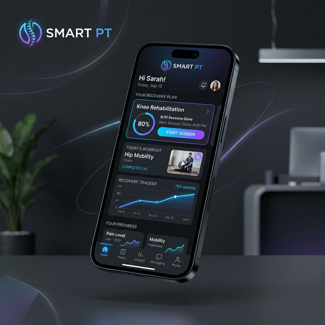

SMART PT
Brand / UX

SMART PT is an advanced physical therapy application utilizing AI to monitor patient progress. A clinical yet extremely premium dark mode UI was devised, relying on glowing accent colors to guide users through the dashboard intuitively. The identity had to be highly professional, trustworthy, and technologically cutting-edge.